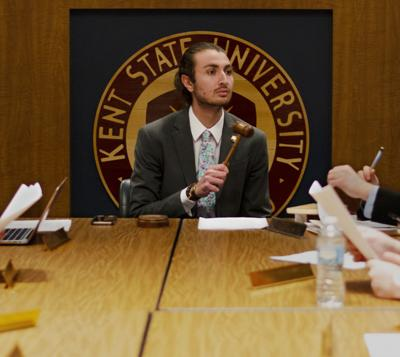

About Vala Zeinali
My name is Vala Zeinali, and I am in the pursuit of something greater than myself. See, ever since my parents left all their belongings in Iran to pursue the American Dream in 2003, I have held myself to succeed. My parents took a big risk and life in America was not easy in the beginning. My mom worked in a rug store and my dad, who was a doctor in Iran, had to start as a resident again.
I was born addicted to fishing, and moving to America meant I can finally go fishing. Ever since I caught that first fish in 2004, I have been hooked, no pun intended, on fishing. All through elementary - high school I fished both recreationally and competitively. I started bass fishing team for my high school, started an aquaponics system for said high school, and eventually pursued to fish competitive bass tournaments in college. In fact, one of the biggest reasons I chose Kent State was because of their bass fishing team.
I learned how to be a leader through starting my fishing club, learned how to collect fishing data and use it to my advantage, and most importantly learned patience.
However, after my first year of competitive collegiate bass fishing, I decided to focus more on my academics and leadership pursuits.
Kent State was nice enough to give me a full ride to study computer science and I could not let that slip. Unfortunately, I had to put the fishing team aside and focus on school.
One of the requirements of my scholarship is having to conduct research all year with faculty. My first year I did my research in environmental computing. I fell in love with research and the process of doing research.
In addition to taking CS classes and doing research, I decided to do something that I regret not doing in high school. That regret is not doing student government. In my first year on campus, I did the impossible, I ran for Director of Business and Finance for our undergraduate student government (USG). NO ONE runs for a director position as a freshman, but something special happened to me the Spring semester of my freshman year. To this day, I am not sure how I mustered up the confidence to campaign against two Juniors for the position.
That semester the new Vala was created, I beat two upperclassmen for the position. Winning was not easy and I stayed up every day, sometimes skipping sleep, food, social life, and campaigned every living second to win the election. It really paid off.
My second year (Fall) on campus I continued to do research, however now in artificial intelligence and with a prof. who was publish hungry. As a result I got lots of great research exposure and published a paper at the age of 19 years old with him. The Fall semester was hard. I was taking 21 credit hours, working 28 hours a week TAing statistics and calculus, doing USG office hours & meetings, and doing high level research.
Over winter break I applied to a couple REU's and studied for the GRE. Second semester came around quick and I was ready. I was ready to execute a goal I had since I graduated from high school. That goal was running for student body president.
Campaigning was soul sucking again. However, during this semester I learned how to public speak extremely well, for that seemed like 80% of it. When I want something, I put my soul into it and that is what I did for student body president campaigning. As a result, I came out a winner again! During my presidency, I focused on providing free menstrual products to our students (Period Project, increase diversity on USG, and create an app for our Period Project.
During the pursuit, I started to hear back from the REU's. The first REU that contacted me was Carnegie Mellon University. I accepted the offer the same day, for CMU is rated number one for computer science research. During this time, I learned that I loved data science and wanted to pursue it for my career.
During my last year at Kent, I began applying to grad schools and ultimately chose Dartmouth. This Fall I start my Masters in Data Science. The degree is more math based and I also have the opportunity to take MBA classes at the Tuck School of business! This Summer I am interning at a asset management firm and want to pursue a career in applying data science to financial data sets. My ultimate goal is to be on the buy side as a quant analyst/researcher at a quant based alternative asset manager.
I will continue pushing myself to the limits